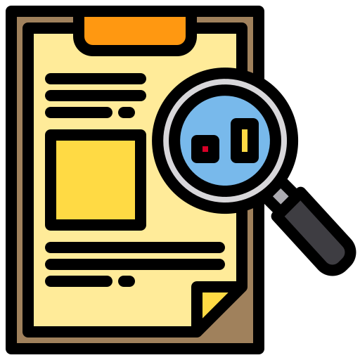

Criterios de evaluación e indicadores de logro
Criterios de evaluación en relación a los objetivos didácticos propuestos. 
- Describir los elementos que condicionan el tiempo correctamente.
- Explicar los conceptos de clima y tiempo con ayuda de las TICS.
- Conocer los diferentes factores climatológicos.
- Interactuar de manera ordenada en debates aportando ideas.
- Describir de forma guiada y estructurada las partes de una noticia.
- Operar con criterio haciendo uso de la calculadora diversas operaciones matemáticas.
- Obtener información concreta y relevante sobre hechos o fenómenos previamente delimitados a partir de la consulta de diversos documentos.
Indicadores de logro en relación a los criterios de evaluación establecidos. Se desarrollarán a lo largo de todas las actividades y serán nuestros ítems de las rúbricas.
- Observa y anota la temperatura de su región.
- Diferencia palabras como frío, viento, nublado y lluvioso.
- Compara tiempo y clima atmosférico utilizando las TICS.
- Identifica los aparatos que miden las variables del tiempo.
- Hace referencia a los factores que condicionan el clima.
- Reconoce los conceptos de la altitud, la latitud y continentalidad.
- Participa en situaciones comunicativas con ideas propias.
- Colabora de forma activa en circunstancias orales.
- Distingue los elementos de una noticia y los relaciona.
- Identifica el tema, el destinatario y la intención del emisor.
- Utiliza la calculadora en operaciones sencillas para resolver problemas de manera más exacta.
- Opera con números naturales y usa estrategias de cálculo.
Criterios de evaluación en relación a los objetivos TIC.
- Iniciar el proceso de búsqueda de información por medio de recursos digitales.
- Utilizar diversos entornos virtuales y navegadores web para enriquecer su aprendizaje.
- Identificar y evaluar las fuentes potenciales de información.
- Desarrollar estrategias de búsqueda de información haciendo uso de las TIC.
- Seleccionar y sintetizar la información extraída para resolver diferentes actividades.
- Realizar tratamientos de imágenes utilizando programas como GIMP o INKSCAPE.
- Encontrar nuevas formas de comunicar la información.
- Respetar el uso legal de la información.